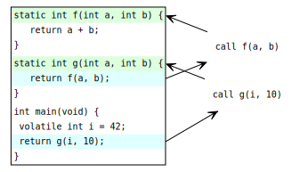
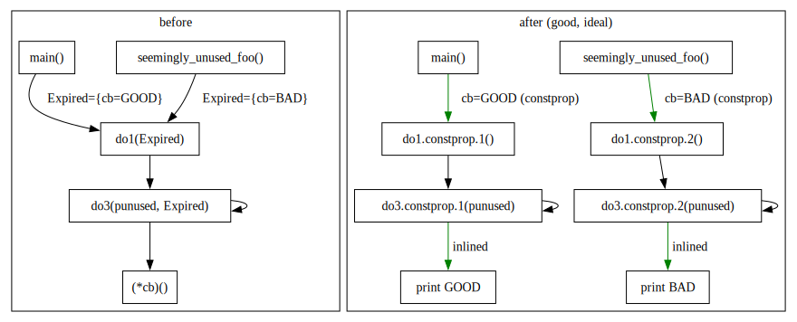
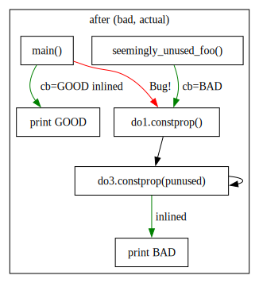
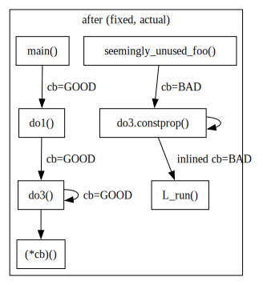

Diving into an IPA gcc bug
gcc has a nice set of optimizations based on inter-procedural
analysis (IPA). Some of them are simpler (like early-inliner),
and some are fancier (like ipa-modref). Their positive (and negative)
effect is most pronounced when applied to a program as a whole (LTO
builds).
Naturally occasional bugs creep in every now and then. They are rare enough and non-trivial enough that I forget almost everything when another one pops up.
I’ll use PR107661 as a running example
to explore some details of ipa-cp pass and write down the process of
chasing the bug. We’ll have a glance at mechanics of trimming down the
example, at mechanics of ipa-cp pass run on a simple example and at
the bug itself.
I hope this doc will be useful to others and maybe future me.
It’s a long read. You have been warned.
The bug effect
After another weekly gcc update I found that llvm-12 (and llvm-11)
test suites started failing 4 tests. All tests normally pass as llvm
test suite is quite self-contained: inputs are in llvm assembly and
outputs are in llvm internal representation. No external tools are
required. Thus any regressions in llvm tests are either latent llvm
bugs (unlikely) or bugs in a host compiler (more likely, gcc-13 in my
case). I usually assume the latter. This time llvm-12 failed these 4
tests as reported by make check:
$ nix build -L --impure --expr 'with import ~/n {}; llvmPackages_12.override { stdenv = gccGitStdenv; }'
...
Failed Tests (4):
LLVM :: CodeGen/AMDGPU/GlobalISel/llvm.amdgcn.div.fmas.ll
LLVM :: CodeGen/AMDGPU/atomic_optimizations_pixelshader.ll
LLVM :: CodeGen/AMDGPU/smem-war-hazard.mir
LLVM :: CodeGen/AMDGPU/vgpr-descriptor-waterfall-loop-idom-update.llExample failing test
Test suite log pointed at this command as a failure trigger:
$ bin/llc < ../test/CodeGen/AMDGPU/vgpr-descriptor-waterfall-loop-idom-update.ll \
-march=amdgcn -mcpu=gfx1010 | bin/FileCheck --allow-unused-prefixes=false \
../test/CodeGen/AMDGPU/vgpr-descriptor-waterfall-loop-idom-update.ll --check-prefix=GCNI ran this test manually. Sometimes it failed, sometimes it succeeded!
The failure was non-deterministic. I hoped for use of uninitialized value
somewhere in llvm code. Any attempt to build llvm-12 with
-fsanitize=address or -fsanitize=undefined made the bug to go away
without any error reports. Not good. Hard to draw any conclusions.
Nailing down suspect source file
The next step was to find the file that likely got mis-compiled: I kept
adding #pragma GCC optimize(0) to various AMDGPU files until bug
disappeared. Then I removed as many added pragmas as I could to find
minimum amount needed to fix the test. One file was enough:
llvm/lib/Target/AMDGPU/GCNHazardRecognizer.cpp. bug disappeared
when I added the pragma to only that file. Guessing the right file took a
few attempts but it was not hard.
Then I started moving functions from GCNHazardRecognizer.cpp (built
with -O0) out into another .cpp file (built with -O3) one by one
to narrow the set of functions to minimum amount when the bug is still
present. At some point
valgrind started complaining at llc for use of uninitialized value.
The precise report did not make sense: there were no uninitialized
variables in c++ code.
Backtraces contained lines from GCNHazardRecognizer.cpp, but only when
llc was built with -O3. -O0 had no complains from valgrind. I
hoped it was a real bug and not a valgrind deficiency.
At that point I had more reproducible example. This allowed me to shrink
vgpr-descriptor-waterfall-loop-idom-update.ll example down to 2 lines
of llvm assembly code while keeping valgrind complaining.
From that point I could understand what llvm input I am compiling and
what checks does GCNHazardRecognizer.cpp attempt to perform: the pass
tested register conflicts and did not modify the input program. That’s
a nice property: we can remove various parts of the validator without
fear of breaking the whole compilation process.
Trimming down the source
Even with most functions removed GCNHazardRecognizer.cpp still
contained 24KB of C++ with many local and STL includes. It was very
hard to explore what gcc was doing wrong to such a large input.
I started removing unused code by adding __builtin_trap() into
functions and making sure that code does not get executed (when llc
ran successfully). This allowed me to shrink GCNHazardRecognizer.cpp
down to 10KB of C++ code.
Trimming down optimization options
After I could remove no other function from GCNHazardRecognizer.cpp
I reduced optimization level from -O3 down to -O1 -fipa-cp -fipa-cp-clone.
I got the list of options to try from gcc -O3 -Q --help=optimizers
output where gcc tells us actual effect of -O3 aggregate option
in terms of more fine-grained individual -f* and --param=* options.
Deoptimizing the source
Then I started adding __attribute__((noinline, noipa)) (or
__attribute__((noclone)) if noipa was too much) to every function
used in GCNHazardRecognizer.cpp. This included common llvm header
files. That way I could reduce amount of transformations gcc does
with input file. I used -fopt-info reports to pick next function to
deoptimize, or inline manually if it’s required to trigger the bug.
This step took a while as I had to sprinkle many parts of llvm common
header code.
The result allowed me to remove vast majority of tiny helper functions from optimizer’s oversight. Some functions I was able to turn into no-op functions just to maintain the callgraph: so that I could keep code execution flow roughly the same.
Getting self-contained example
From that point I could extract the result into a single .cpp file.
I filed a PR107661 form the result
hoping that the bug would be obvious to an expert.
The resulting test was still a bit cryptic. I’m not posting it here as we can do a bit better before looking at what compiler does with it.
Removing most syntactic sugar
Then I expanded high level c++ constructs like lambda functions and
classes into structs and explicit methond names, inlined methods manually
and removed unused parameters. In this case I especially was afraid of
function_ref class used in original file: it used very unusal way to
capture lambda context. I was not sure it conforms to C++ semantics.
In the example below we just pass a function pointer with seemingly no opporutunity of undefined behaviour.
// #define DISABLE_HACK 1
#include <stdio.h>
static void L_run(void) { fprintf(stderr, "BAD\n"); }
static void callback_fn_L(void) { L_run(); }
static void callback_fn_R(void) { fprintf(stderr, "GOOD\n"); }
struct function_ref {
void (*callback)(void);
};
// allow one level of recursion to call callback twice
static int is_recur(void) {
static int n = 0;
switch (n++) {
case 0: return 1;
default: return 0;
}
}
static void do3(volatile int * punused, function_ref Expired) {
Expired.callback();
if (is_recur())
do3(punused, Expired);
}
static void do1(function_ref Expired) {
volatile int unused = 42;
do3(&unused, Expired);
}
int main(void) { do1(function_ref{callback_fn_R}); }
#if defined(DISABLE_HACK)
#else
void seemingly_unused_foo(void) { do1(function_ref{callback_fn_L}); }
#endifThis example behaves differently when void seemingly_unused_foo(void)
is presend and is absent in the code:
$ ./gcc-13-snap/bin/gcc -O1 -fipa-cp -fipa-cp-clone a.cc -o a && ./a
GOOD
BAD
$ ./gcc-13-snap/bin/gcc -O1 -fipa-cp -fipa-cp-clone -DDISABLE_HACK a.cc -o a && ./a
GOOD
GOODNote how executable output changes from GOOD/BAD to GOOD/GOOD. It’s not
supposed to and gcc-12 never prints BAD text.
Making sure not many optimization oportunities are left
Once we have a self-contained example it’s useful to apply (or disable)
most unrelated optimizations. Once again I usually use -fopt-info for
that.
Running it against our current example reports just one transformation:
$ gcc -O1 -fipa-cp -fipa-cp-clone -fopt-info -c a.cc -o a.o
a.cc:31:19: optimized: converting indirect call in void do3.constprop(volatile int*, function_ref)/24 to direct call to void callback_fn_L()/13Here we see that gcc did something to do3() to optimize indirect
Expired.callback(); call into direct callback_fn_L() call. That is
probably done to optimize seemingly_unused_foo() as nothing else is
expected to call callback_fn_L().
While we are at it there are cases when you expect some optimization to
fire. But for some reason it does not happen.-fopt-info-all might
sched some light into decisions made by gcc:
$ gcc -O1 -fipa-cp -fipa-cp-clone -fopt-info-all -c a.cc -o a.o
a.cc:47:6: missed: Node void seemingly_unused_foo()/20 has no profile-id (profile feedback missing?)
a.cc:43:5: missed: Node int main()/19 has no profile-id (profile feedback missing?)
a.cc:37:13: missed: Node void do1(function_ref)/18 has no profile-id (profile feedback missing?)
a.cc:30:13: missed: Node void do3(volatile int*, function_ref)/17 has no profile-id (profile feedback missing?)
a.cc:22:12: missed: Node int is_recur()/16 has no profile-id (profile feedback missing?)
a.cc:15:13: missed: Node void callback_fn_R()/14 has no profile-id (profile feedback missing?)
a.cc:14:13: missed: Node void callback_fn_L()/13 has no profile-id (profile feedback missing?)
a.cc:13:13: missed: Node void L_run()/12 has no profile-id (profile feedback missing?)
a.cc:31:19: optimized: converting indirect call in void do3.constprop(volatile int*, function_ref)/24 to direct call to void callback_fn_L()/13
a.cc:31:19: missed: not inlinable: void do3.constprop(volatile int*, function_ref)/24 -> void callback_fn_L()/13, function not inline candidate
a.cc:33:15: missed: not inlinable: void do3.constprop(volatile int*, function_ref)/24 -> int is_recur()/16, function not inline candidate
a.cc:34:8: missed: not inlinable: void do3.constprop(volatile int*, function_ref)/24 -> void do3.constprop(volatile int*, function_ref)/24, function not inline candidate
a.cc:40:6: missed: not inlinable: void do1.constprop(function_ref)/23 -> void do3.constprop(volatile int*, function_ref)/24, function not inline candidate
a.cc:47:38: missed: not inlinable: void seemingly_unused_foo()/20 -> void do1.constprop(function_ref)/23, function not inline candidate
a.cc:43:21: missed: not inlinable: int main()/19 -> void do1(function_ref)/18, function not inline candidate
a.cc:40:6: missed: not inlinable: void do1(function_ref)/18 -> void do3(volatile int*, function_ref)/17, function not inline candidate
a.cc:34:8: missed: not inlinable: void do3(volatile int*, function_ref)/17 -> void do3.constprop(volatile int*, function_ref)/24, function not inline candidate
a.cc:33:15: missed: not inlinable: void do3(volatile int*, function_ref)/17 -> int is_recur()/16, function not inline candidate
a.cc:15:42: missed: not inlinable: void callback_fn_R()/14 -> long unsigned int __builtin_fwrite(const void*, size_t, size_t, FILE*)/22, function body not available
a.cc:14:40: missed: not inlinable: void callback_fn_L()/13 -> void L_run()/12, function not inline candidate
a.cc:13:34: missed: not inlinable: void L_run()/12 -> long unsigned int __builtin_fwrite(const void*, size_t, size_t, FILE*)/22, function body not available
Unit growth for small function inlining: 82->82 (0%)
Inlined 4 calls, eliminated 1 functionsHere we see all sorts of rejected inline attempts. From what I
understand -O1 only implies -finline-functions-called-once
but not -finline-functions (-O2 default). That means inline
keyword (or a single-call static function call) is the usual
trigger for inlining decision.
A simpler constant propagation example
Before chasing specifics of our breakage let’s have a look at a simpler falid case of constant propagation across procedures. Let’s try the following contrived example:
/* Forbid inlining to see the cloning effect */
__attribute__((noinline))
static int f(int a, int b) {
return a + b;
}
/* Add one level of indirection to force IPA discover f(..., 10) */
__attribute__((noinline))
static int g(int a, int b) {
return f(a, b);
}
int main(void) {
volatile int i = 42;
return g(i, 10);
}
Here we define f(int a, int b) and g(int a, int b) function that
ever see b = 10 value as their second argument. Will gcc do
something about that redundancy? We also mark both functions noinline
to prevent gcc from just inlining everything into main().
Bulding and running it:
$ gcc -O3 a.c -o a && ./a
$ echo $?
52The program prints 42 + 10 = 52 as expected. Let’s look at the IPA
details to trace through it’s workings. I’ll use -fdump-ipa-cp-slim
to dump pass internal state and decisions:
$ gcc -O3 -c a.c -fdump-ipa-cp-slim
$ cat a.c.081i.cpI’ll paste a.c.081i.cp in pieces and add a few comments around:
IPA constant propagation start:
IPA structures before propagation:
Jump functions:
Jump functions of caller main/2:
callsite main/2 -> g/1 :
param 0: UNKNOWN
value: 0x0, mask: 0xffffffffffffffffffffffffffffffffffffffffffffffffffffffffffffffffffffffffffffffffffffffffffffffffffffffffffffffffffffffffffffffffffffffffffffffff
Unknown VR
param 1: CONST: 10
value: 0xa, mask: 0x0
Unknown VR
Jump functions of caller g/1:
callsite g/1 -> f/0 :
param 0: PASS THROUGH: 0, op nop_expr
value: 0x0, mask: 0xffffffffffffffffffffffffffffffffffffffffffffffffffffffffffffffffffffffffffffffffffffffffffffffffffffffffffffffffffffffffffffffffffffffffffffffff
Unknown VR
param 1: PASS THROUGH: 1, op nop_expr
value: 0x0, mask: 0xffffffffffffffffffffffffffffffffffffffffffffffffffffffffffffffffffffffffffffffffffffffffffffffffffffffffffffffffffffffffffffffffffffffffffffffff
Unknown VR
Jump functions of caller f/0:This is the list of initial facts about our program before the optimization:
f()does not call any other functiong()callsf(), it has 2 parameters and both get passed as is tof()main()callsg():- param0 has unknown value
- param1 has known value
10(0xa). Whymask:value is so large? An exercise for the reader.
Next step is to figure out if known constants propagate to callees in any interesting way:
Propagating constants:
overall_size: 20
- context independent values, size: 6, time_benefit: 1.000000
Decided to specialize for all known contexts, code not going to grow.
- context independent values, size: 3, time_benefit: 1.000000
Decided to specialize for all known contexts, code not going to grow.
IPA lattices after all propagation:
Lattices:
Node: main/2:
Node: g/1:
param [0]: VARIABLE
ctxs: VARIABLE
Bits unusable (BOTTOM)
int VARYING
AGGS VARIABLE
param [1]: 10 [loc_time: 0, loc_size: 0, prop_time: 0, prop_size: 0]
ctxs: VARIABLE
Bits: value = 0xa, mask = 0x0
int [10, 10]
AGGS VARIABLE
Node: f/0:
param [0]: VARIABLE
ctxs: VARIABLE
Bits unusable (BOTTOM)
int VARYING
AGGS VARIABLE
param [1]: 10 [loc_time: 0, loc_size: 0, prop_time: 0, prop_size: 0]
ctxs: VARIABLE
Bits: value = 0xa, mask = 0x0
int [10, 10]
AGGS VARIABLE
Here propagation step figured out extra facts:
f()’s parameters are a bit more definite:- param0 is still unknown (
BOTTOM) - param1 always has value
10
- param0 is still unknown (
g()’s parameters have exactly the same structure asf()’s:- param0 is still unknown (
BOTTOM) - param1 always has value
10
- param0 is still unknown (
main()has nothing special about it’s parameters
prop_time: 0, prop_size: 0 tell us that possible constant propagation
does not worsen runtime of the original code.
Then goes the decision phase:
IPA decision stage:
- Creating a specialized node of g/1 for all known contexts.
replacing param #1 b with const 10
- Creating a specialized node of f/0 for all known contexts.
replacing param #1 b with const 10
Propagated bits info for function f.constprop/4:
param 1: value = 0xa, mask = 0x0
Propagated bits info for function g.constprop/3:
param 1: value = 0xa, mask = 0x0
Propagated bits info for function g/1:
param 1: value = 0xa, mask = 0x0
Propagated bits info for function f/0:
param 1: value = 0xa, mask = 0x0
IPA constant propagation endAs expected f() and g() were replaced when equivalent functions
where their second parameter is always equals 10. After the
transformation original f() and g() are no used anymore and can go
away. Call graph becomes slightly more complicated:
;; Function f.constprop (f.constprop.0, funcdef_no=3, decl_uid=2004, cgraph_uid=5, symbol_order=4) (executed once)
Modification phase of node f.constprop/4
__attribute__((noinline))
int f.constprop (int a)
{
int b;
int _2;
<bb 3> [local count: 1073741824]:
<bb 2> [local count: 1073741824]:
_2 = a_1(D) + 10;
return _2;
}
;; Function g.constprop (g.constprop.0, funcdef_no=4, decl_uid=2003, cgraph_uid=4, symbol_order=3) (executed once)
Modification phase of node g.constprop/3
__attribute__((noinline))
int g.constprop (int a)
{
int b;
int _2;
<bb 3> [local count: 1073741824]:
<bb 2> [local count: 1073741824]:
_2 = f (a_1(D), 10);
return _2;
}
;; Function main (main, funcdef_no=2, decl_uid=1987, cgraph_uid=3, symbol_order=2) (executed once)
Modification phase of node main/2
int main ()
{
volatile int i;
int i.0_1;
int _4;
<bb 2> [local count: 1073741824]:
i ={v} 42;
i.0_1 ={v} i;
_4 = g (i.0_1, 10);
return _4;
}Note how this pass turned int f(int a, int b) { return a + b; } into
int f.constprop(int a) { return a + 10; }. While g.constprop() and
main() still do call 2-parameter forms of f() and g() in the
report.
Luckily that is not the final pass! If we look at final state at
a.c.252t.optimized (generated by
gcc -O3 -c a.c -fdump-tree-optimized-slim):
__attribute__((noinline))
int f.constprop (int a)
{
int _2;
<bb 2>:
_2 = a_1(D) + 10;
return _2;
}
__attribute__((noinline))
int g.constprop (int a)
{
int _2;
<bb 2>:
_2 = f.constprop (a_1(D)); [tail call]
return _2;
}
int main ()
{
volatile int i;
int i.0_1;
int _4;
<bb 2>:
i ={v} 42;
i.0_1 ={v} i;
_4 = g.constprop (i.0_1); [tail call]
return _4;
}Or the same in more concise form:
All function are single-parameter now. b = 10 was pushed all the way
down to f.constprop() definition.
Tracking down faulty subsystem
Now back to our buggy example: why did BAD get printed at all? I had
no idea. Generated assembly code did not make sense.
First I bisected gcc to see if the change was small enough to
immediately see the bug. Bisect found regression in big
ipa-cp: Better representation of aggregate values we clone for
commit: 5 files changed, 733 insertions(+), 666 deletions(-).
The commit is not supposed to bring in any visible changes to
the algorightm used. It should only improve gcc efficiency a bit
without any change in the output. The diff in commit was too large for
me to understand. I had no idea what I was looking at.
I moved to inspect gcc’s transformation stages. Each individual
optimization pass is usually simple enough that we can manually
verify if it’s effect is correct. At least for me that works only
for small input source files.
gcc’s pass debugging steps hide under -fdump-* flags. Most
frequentl flags I use are:
-fdump-tree-all(or similar-fdump-tree-all-all,-fdump-tree-all-slimthat differ in verbosity)-fdump-ipa-all(or-fdump-ipa-all-alland-fdump-ipa-all-slim)-fdump-rtl-all(or-fdump-rtl-all-alland-fdump-ipa-rtl-slim)
gcc man page defines many more output formats and suffix meanings.
Building the example with -fdump-tree-all-slim creates many files
including a.cc.254t.optimized of this content:
;; Function callback_fn_R (_ZL13callback_fn_Rv, funcdef_no=14, decl_uid=3302, cgraph_uid=15, symbol_order=14)
void callback_fn_R ()
{
struct FILE * stderr.0_1;
<bb 2>:
stderr.0_1 = stderr;
__builtin_fwrite ("GOOD\n", 1, 5, stderr.0_1);
return;
}
;; Function L_run (_ZL5L_runv, funcdef_no=12, decl_uid=3298, cgraph_uid=13, symbol_order=12)
void L_run ()
{
struct FILE * stderr.5_1;
<bb 2>:
stderr.5_1 = stderr;
__builtin_fwrite ("BAD\n", 1, 4, stderr.5_1);
return;
}
;; Function do3.constprop (_ZL3do3PVi12function_ref.constprop.0, funcdef_no=21, decl_uid=3391, cgraph_uid=23, symbol_order=24)
void do3.constprop (volatile int * punused, struct function_ref Expired)
{
int _2;
<bb 2>:
L_run ();
_2 = is_recur ();
if (_2 != 0)
goto <bb 3>; [33.00%]
else
goto <bb 4>; [67.00%]
<bb 3>:
do3.constprop (punused_3(D), Expired);
<bb 4>:
return;
}
;; Function main (main, funcdef_no=18, decl_uid=3357, cgraph_uid=19, symbol_order=19) (executed once)
int main ()
{
struct function_ref Expired;
volatile int unused;
int _5;
<bb 2>:
unused ={v} 42;
Expired.callback = callback_fn_R;
callback_fn_R ();
_5 = is_recur ();
if (_5 != 0)
goto <bb 3>; [33.00%]
else
goto <bb 4>; [67.00%]
<bb 3>:
do3.constprop (&unused, Expired);
<bb 4>:
return 0;
}
...
void seemingly_unused_foo ()
{
volatile int unused;
struct function_ref Expired;
Expired.callback = callback_fn_L;
unused ={v} 42;
do3.constprop (&unused, Expired);
return;
}While it’s a lot of text it’s almost identical source program we wrote. The only difference is verbosity: explicit assignments instead of constructors, explicit label jumps and similar.
Having skimmed through it we can spot a few curious things:
do3()disappered completely.do3.constprop()is the only one left and it calls onlyL_run()(fromcallback_fn_L). There is nocallback_fn_Rcall.seemingly_unused_foo()callsdo3.constprop()directly (ok).main()callscallback_fn_R()directly (ok) and callsdo3.constprop()(bug!).do1()was completely optimised away by inlining intomain()andseemingly_unused_foo().
Let’s look at the output of IPA phases instead. I used
-fdump-ipa-all-slim to generate the logs. Among other things
it generates a.cc.081i.cp file:
IPA constant propagation start:
IPA structures before propagation:
Jump functions:
Jump functions of caller void seemingly_unused_foo()/20:
callsite void seemingly_unused_foo()/20 -> void do1(function_ref)/18 :
param 0: UNKNOWN
Aggregate passed by value:
offset: 0, type: void (*<T53f>) (void), CONST: callback_fn_L
Unknown bits
Unknown VR
Jump functions of caller int main()/19:
callsite int main()/19 -> void do1(function_ref)/18 :
param 0: UNKNOWN
Aggregate passed by value:
offset: 0, type: void (*<T53f>) (void), CONST: callback_fn_R
Unknown bits
Unknown VR
...
Jump functions of caller void do3(volatile int*, function_ref)/17:
callsite void do3(volatile int*, function_ref)/17 -> void do3(volatile int*, function_ref)/17 :
param 0: PASS THROUGH: 0, op nop_expr
value: 0x0, mask: 0xffffffffffffffff
Unknown VR
param 1: PASS THROUGH: 1, op nop_expr
Unknown bits
Unknown VR
callsite void do3(volatile int*, function_ref)/17 -> int is_recur()/16 :
indirect aggregate callsite, calling param 1, offset 0, by_value, for stmt _1 ();
...
IPA lattices after all propagation:
Lattices:
...
Node: void do1(function_ref)/18:
param [0]: VARIABLE
ctxs: VARIABLE
Bits unusable (BOTTOM)
[irange] int VARYING
offset 0: callback_fn_L [loc_time: 0, loc_size: 7, prop_time: 17, prop_size: 20]
callback_fn_R [loc_time: 0, loc_size: 7, prop_time: 9, prop_size: 20]
Node: void do3(volatile int*, function_ref)/17:
param [0]: VARIABLE
ctxs: VARIABLE
Bits: value = 0x0, mask = 0xfffffffffffffffc
[irange] int VARYING
AGGS VARIABLE
param [1]: VARIABLE
ctxs: VARIABLE
Bits unusable (BOTTOM)
[irange] int VARYING
offset 0: callback_fn_L [loc_time: 17, loc_size: 13, prop_time: 17, prop_size: 13]
callback_fn_R [loc_time: 9, loc_size: 13, prop_time: 9, prop_size: 13]
...
IPA decision stage:
Creating a specialized node of void do1(function_ref)/18.
Creating a specialized node of void do3(volatile int*, function_ref)/17.
ipa-prop: Discovered an indirect call to a known target (void do3.constprop(volatile int*, function_ref)/24 -> void callback_fn_L()/13), for stmt _1 ();
- adding an extra caller void do3(volatile int*, function_ref)/17 of void do3.constprop(volatile int*, function_ref)/24
IPA constant propagation end
...
Symbol table:
_ZL3do3PVi12function_ref.constprop.0/24 (void do3.constprop(volatile int*, function_ref))
Type: function definition analyzed
Visibility:
References: _ZL13callback_fn_Lv/13 (addr)
Referring:
Clone of _ZL3do3PVi12function_ref/17
Availability: local
Function flags: count:1073741824 (estimated locally) local
Called by: _ZL3do3PVi12function_ref/17 (354334800 (estimated locally),0.33 per call) (can throw external) _ZL3do3PVi12function_ref.constprop.0/24 (354334800 (estimated locally),0.33 per call) (can throw external) _ZL3do112function_ref.constprop.0/23 (1073741824 (estimated locally),1.00 per call) (can throw external)
Calls: _ZL13callback_fn_Lv/13 (1073741824 (estimated locally),1.00 per call) (can throw external) _ZL8is_recurv/16 (1073741824 (estimated locally),1.00 per call) _ZL3do3PVi12function_ref.constprop.0/24 (354334800 (estimated locally),0.33 per call) (can throw external)
...
;; Function do3.constprop (_ZL3do3PVi12function_ref.constprop.0, funcdef_no=21, decl_uid=3391, cgraph_uid=23, symbol_order=24)
Modification phase of node void do3.constprop(volatile int*, function_ref)/24
Aggregate replacements: 1[0]=callback_fn_L
void do3.constprop (volatile int * punused, struct function_ref Expired)
{
void (*<T53f>) (void) _1;
int _2;
<bb 5>:
<bb 2>:
_1 = callback_fn_L;
_1 ();
_2 = is_recur ();
if (_2 != 0)
goto <bb 3>;
else
goto <bb 4>;
<bb 3>:
do3 (punused_3(D), Expired);
<bb 4>:
return;
}
...
;; Function main (main, funcdef_no=18, decl_uid=3357, cgraph_uid=19, symbol_order=19) (executed once)
Modification phase of node int main()/19
int main ()
{
struct function_ref D.3363;
<bb 2>:
D.3363.callback = callback_fn_R;
do1 (D.3363);
return 0;
}
;; Function seemingly_unused_foo (_Z20seemingly_unused_foov, funcdef_no=19, decl_uid=3360, cgraph_uid=20, symbol_order=20)
Modification phase of node void seemingly_unused_foo()/20
void seemingly_unused_foo ()
{
struct function_ref D.3373;
<bb 2>:
D.3373.callback = callback_fn_L;
do1 (D.3373);
return;
}A lot more text that before. Here IPA pass tells us a bit of inferred
state out of our program and then applies some transformations to it.
The above output tells us that do3() was cloned into do3.constprop()
with explicit call of _1 = callback_fn_L; _1 (); and nothing else.
According to modified functions output do3.constprop() is not used in
anywhere.
But that is misleading: symbol table is clearly telling us the reverse:
_ZL3do3PVi12function_ref.constprop.0/24 (aka do3.constprop())
Called by: _ZL3do3PVi12function_ref/17 (aka do3()),
_ZL3do3PVi12function_ref.constprop.0/24 (aka do3.constprop()),
_ZL3do112function_ref.constprop.0/23 (aka do1.constprop()).
The most suspicious output here is presence of
do3() -> do3.constprop() edge. How could do3() call
do3.constprop()? The line
- adding an extra caller void do3(volatile int*, function_ref)/17 of void do3.constprop(volatile int*, function_ref)/24
in the log is a good hint where to look at the details in gcc’s source
code.
Anyway, the resulting printed code is not directly broken. So far it’s “only” edge information that looks incorrect. Maybe I am misinterpreting it?
Now let’s look at the next a.cc.085i.inline IPA step:
...
Deciding on functions to be inlined into all callers and removing useless speculations:
Inlining void do1.constprop(function_ref)/23 size 7.
Called once from void seemingly_unused_foo()/20 6 insns.
Parm map: -1
Updated mod-ref summary for void seemingly_unused_foo()/20
loads:
stores:
Side effects
Nondeterministic
Try dse
Inlined into void seemingly_unused_foo()/20 which now has 8 size
Inlining void do3(volatile int*, function_ref)/17 size 14.
Called once from void do1(function_ref)/18 7 insns.
Parm map: -5 0
Updated mod-ref summary for void do1(function_ref)/18
loads:
stores:
Side effects
Nondeterministic
Inlined into void do1(function_ref)/18 which now has 14 size
Inlining void callback_fn_L()/13 size 4.
Called once from void do3.constprop(volatile int*, function_ref)/24 12 insns.
Parm map:
Updated mod-ref summary for void do3.constprop(volatile int*, function_ref)/24
loads:
stores:
Inlined into void do3.constprop(volatile int*, function_ref)/24 which now has 12 size
Inlining void do1(function_ref)/18 size 14.
Called once from int main()/19 6 insns.
Parm map: -1
Updated mod-ref summary for int main()/19
loads:
stores:
Side effects
Nondeterministic
Try dse
Node void do1(function_ref)/27 promoted to executed once.
Node void do3(volatile int*, function_ref)/28 promoted to executed once.
Inlined into int main()/19 which now has 15 size
Overall time estimate: 204.840000 weighted by profile: 0.000000
...
;; Function do3.constprop (_ZL3do3PVi12function_ref.constprop.0, funcdef_no=21, decl_uid=3391, cgraph_uid=23, symbol_order=24)
void do3.constprop (volatile int * punused, struct function_ref Expired)
{
void (*<T53f>) (void) _1;
int _2;
<bb 2>:
_1 = callback_fn_L;
L_run ();
_2 = is_recur ();
if (_2 != 0)
goto <bb 3>;
else
goto <bb 4>;
<bb 3>:
do3.constprop (punused_3(D), Expired);
<bb 4>:
return;
}
;; Function main (main, funcdef_no=18, decl_uid=3357, cgraph_uid=19, symbol_order=19) (executed once)
int main ()
{
struct function_ref Expired;
volatile int unused;
struct function_ref Expired;
struct function_ref D.3363;
void (*<T53f>) (void) _4;
int _5;
<bb 2>:
D.3363.callback = callback_fn_R;
Expired = D.3363;
unused ={v} 42;
Expired = Expired;
_4 = Expired.callback;
_4 ();
_5 = is_recur ();
if (_5 != 0)
goto <bb 3>;
els
goto <bb 4>;
<bb 3>:
do3.constprop (&unused, Expired);
<bb 4>:
return 0;
}Here we can see how problematic edges discovered in cp phase broke
inline: main() function now calls do3.constprop (); (after do3()
inline) and that encodes L_run (); call to print BAD.
Diving into ipa-cp
Now let’s try to figure out why does ipa-cp add a problematic
do3() -> do3.constprop() edge.
gcc frequently has great comments in the source code on details of
what a pass is supposed to do. ipa-cp is no exception: it hides
in gcc/ipa-cp.cc file:
23 /* Interprocedural constant propagation (IPA-CP).
24
25 The goal of this transformation is to
26
27 1) discover functions which are always invoked with some arguments with the
28 same known constant values and modify the functions so that the
29 subsequent optimizations can take advantage of the knowledge, and
30
31 2) partial specialization - create specialized versions of functions
32 transformed in this way if some parameters are known constants only in
33 certain contexts but the estimated tradeoff between speedup and cost size
34 is deemed good.
35
36 The algorithm also propagates types and attempts to perform type based
37 devirtualization. Types are propagated much like constants.
38
39 The algorithm basically consists of three stages. In the first, functions
40 are analyzed one at a time and jump functions are constructed for all known
41 call-sites. In the second phase, the pass propagates information from the
42 jump functions across the call to reveal what values are available at what
43 call sites, performs estimations of effects of known values on functions and
44 their callees, and finally decides what specialized extra versions should be
45 created. In the third, the special versions materialize and appropriate
46 calls are redirected.
47
48 The algorithm used is to a certain extent based on "Interprocedural Constant
49 Propagation", by David Callahan, Keith D Cooper, Ken Kennedy, Linda Torczon,
50 Comp86, pg 152-161 and "A Methodology for Procedure Cloning" by Keith D
51 Cooper, Mary W. Hall, and Ken Kennedy.
52
53
54 First stage - intraprocedural analysis
55 =======================================
56
57 This phase computes jump_function and modification flags.
58
59 A jump function for a call-site represents the values passed as an actual
60 arguments of a given call-site. In principle, there are three types of
61 values:
62
63 Pass through - the caller's formal parameter is passed as an actual
64 argument, plus an operation on it can be performed.
65 Constant - a constant is passed as an actual argument.
66 Unknown - neither of the above.
67
68 All jump function types are described in detail in ipa-prop.h, together with
69 the data structures that represent them and methods of accessing them.
70
71 ipcp_generate_summary() is the main function of the first stage.
72
73 Second stage - interprocedural analysis
74 ========================================
75
76 This stage is itself divided into two phases. In the first, we propagate
77 known values over the call graph, in the second, we make cloning decisions.
78 It uses a different algorithm than the original Callahan's paper.
79
80 First, we traverse the functions topologically from callers to callees and,
81 for each strongly connected component (SCC), we propagate constants
82 according to previously computed jump functions. We also record what known
83 values depend on other known values and estimate local effects. Finally, we
84 propagate cumulative information about these effects from dependent values
85 to those on which they depend.
86
87 Second, we again traverse the call graph in the same topological order and
88 make clones for functions which we know are called with the same values in
89 all contexts and decide about extra specialized clones of functions just for
90 some contexts - these decisions are based on both local estimates and
91 cumulative estimates propagated from callees.
92
93 ipcp_propagate_stage() and ipcp_decision_stage() together constitute the
94 third stage.
95
96 Third phase - materialization of clones, call statement updates.
97 ============================================
98
99 This stage is currently performed by call graph code (mainly in cgraphunit.cc
100 and tree-inline.cc) according to instructions inserted to the call graph by
101 the second stage. */The idea is straighforward:
- collect all the call sites with their parameters (constant parameters are most interesting to propagate them into callees)
- sort the call graph topologically
- estimate propagation effect (cost reduction)
- clone functions by applying propagated constants where it’s beneficial
- patch call sites to use clones instead of original functions
While the whole algorithm might be overwhelming each of it’s step is not too big to trace it through for our concrete example.
In theory ipa-cp should perform a transformation similar to the following:

I expected callback cb indirection to be fully specialised and
runtime indirection to completely go away.
In practice something like the following occurs:

Note: main() manages to both inline GOOD callback and call
specialized do1.constprop() BAD branch. The edge marked with Bug!
is the actual bug here.
To summarise the ipa-cp pass once again it consists of 3 steps:
- collect information around known call sites of the functions (“jump functions”)
- calculate propagation information around known calls to see how far they reach unmodified and how many functions get always called with the same arguments (“constant propagation”)
- generate specialized function clones and redirect matching call sites to the clones (“decision”)
Let’s look in more detail at our example to find out what specifically went wrong. I’ll post code snippet again:
// #define DISABLE_HACK 1
#include <stdio.h>
static void L_run(void) { fprintf(stderr, "BAD\n"); }
static void callback_fn_L(void) { L_run(); }
static void callback_fn_R(void) { fprintf(stderr, "GOOD\n"); }
struct function_ref {
void (*callback)(void);
};
// allow one level of recursion to call callback twice
static int is_recur(void) {
static int n = 0;
switch (n++) {
case 0: return 1;
default: return 0;
}
}
static void do3(volatile int * punused, function_ref Expired) {
Expired.callback();
if (is_recur())
do3(punused, Expired);
}
static void do1(function_ref Expired) {
volatile int unused = 42;
do3(&unused, Expired);
}
int main(void) { do1(function_ref{callback_fn_R}); }
#if defined(DISABLE_HACK)
#else
void seemingly_unused_foo(void) { do1(function_ref{callback_fn_L}); }
#endifAnd relevant analysis again:
IPA lattices after all propagation:
Lattices:
...
Node: void do1(function_ref)/18:
param [0]: VARIABLE
ctxs: VARIABLE
Bits unusable (BOTTOM)
[irange] int VARYING
offset 0: callback_fn_L [loc_time: 0, loc_size: 7, prop_time: 17, prop_size: 20]
callback_fn_R [loc_time: 0, loc_size: 7, prop_time: 9, prop_size: 20]
Node: void do3(volatile int*, function_ref)/17:
param [0]: VARIABLE
ctxs: VARIABLE
Bits: value = 0x0, mask = 0xfffffffffffffffc
[irange] int VARYING
AGGS VARIABLE
param [1]: VARIABLE
ctxs: VARIABLE
Bits unusable (BOTTOM)
[irange] int VARYING
offset 0: callback_fn_L [loc_time: 17, loc_size: 13, prop_time: 17, prop_size: 13]
callback_fn_R [loc_time: 9, loc_size: 13, prop_time: 9, prop_size: 13]
...
IPA decision stage:
Creating a specialized node of void do1(function_ref)/18.
Creating a specialized node of void do3(volatile int*, function_ref)/17.
ipa-prop: Discovered an indirect call to a known target (void do3.constprop(volatile int*, function_ref)/24 -> void callback_fn_L()/13), for stmt _1 ();
- adding an extra caller void do3(volatile int*, function_ref)/17 of void do3.constprop(volatile int*, function_ref)/24Here propagation phase correctly sees that do3() sees two constants
being passed as parameters: callback_fn_L() and callback_fn_R().
Thus whatever do3.constprop() is specialized against do3() can’t call
into it on it’s own: do3() has to work for callback_fn_L() and callback_fn_R()
inputs.
If we look at adding an extra caller string in gcc’s source code we
will see the conditon on which gcc decided it’s OK
in perhaps_add_new_callers():
/* Given an original NODE and a VAL for which we have already created a
specialized clone, look whether there are incoming edges that still lead
into the old node but now also bring the requested value and also conform to
all other criteria such that they can be redirected the special node.
This function can therefore redirect the final edge in a SCC. */
template <typename valtype>
static void
perhaps_add_new_callers (cgraph_node *node, ipcp_value<valtype> *val)
{
ipcp_value_source<valtype> *src;
profile_count redirected_sum = profile_count::zero ();
for (src = val->sources; src; src = src->next)
{
struct cgraph_edge *cs = src->cs;
while (cs)
{
if (cgraph_edge_brings_value_p (cs, src, node, val)
&& cgraph_edge_brings_all_scalars_for_node (cs, val->spec_node)
&& cgraph_edge_brings_all_agg_vals_for_node (cs, val->spec_node))
{
if (dump_file)
fprintf (dump_file, " - adding an extra caller %s of %s\n",
cs->caller->dump_name (),
val->spec_node->dump_name ());
cs->redirect_callee_duplicating_thunks (val->spec_node);
val->spec_node->expand_all_artificial_thunks ();
if (cs->count.ipa ().initialized_p ())
redirected_sum = redirected_sum + cs->count.ipa ();
}
cs = get_next_cgraph_edge_clone (cs);
}
}
if (redirected_sum.nonzero_p ())
update_specialized_profile (val->spec_node, node, redirected_sum);
}
...
/* Determine whether CS also brings all aggregate values that NODE is
specialized for. */
static bool
cgraph_edge_brings_all_agg_vals_for_node (struct cgraph_edge *cs,
struct cgraph_node *node)
{
ipcp_transformation *ts = ipcp_get_transformation_summary (node);
if (!ts || vec_safe_is_empty (ts->m_agg_values))
return true;
const ipa_argagg_value_list existing (ts->m_agg_values);
auto_vec<ipa_argagg_value, 32> edge_values;
ipa_node_params *dest_info = ipa_node_params_sum->get (node);
gcc_checking_assert (dest_info->ipcp_orig_node);
dest_info = ipa_node_params_sum->get (dest_info->ipcp_orig_node);
push_agg_values_from_edge (cs, dest_info, &edge_values, &existing);
const ipa_argagg_value_list avl (&edge_values);
return avl.superset_of_p (existing);
}Given that we pass a struct { ... } as a parameter our condition that
should have failed lives at cgraph_edge_brings_all_agg_vals_for_node (cs, val->spec_node)
call. It is supposed to check that all the parameters that our d3.constprop()
is specialised against is enough to cover all the call sites.
cgraph_edge_brings_all_agg_vals_for_node() just implements that:
avl contains all values from seen edges while existing contains
values node is specialised against. Adding simple
avl.dump (stderr); existing.dump (stderr); shows the discrepancy.
A bit of extra debugging revealed that push_agg_values_from_edge() is
slightly broken in the way it handles self-recursive functions like
d3(): instead of extending already known values extracted from
specialised node (passed as &existing) it just reuses &existing
value as if no other information is present.
The workaround to test the theory was simple: just drop this preseed.
--- a/gcc/ipa-cp.cc
+++ b/gcc/ipa-cp.cc
@@ -5868,35 +5868,35 @@ cgraph_edge_brings_all_scalars_for_node (struct cgraph_edge *cs,
/* Determine whether CS also brings all aggregate values that NODE is
specialized for. */
static bool
cgraph_edge_brings_all_agg_vals_for_node (struct cgraph_edge *cs,
struct cgraph_node *node)
{
ipcp_transformation *ts = ipcp_get_transformation_summary (node);
if (!ts || vec_safe_is_empty (ts->m_agg_values))
return true;
const ipa_argagg_value_list existing (ts->m_agg_values);
auto_vec<ipa_argagg_value, 32> edge_values;
ipa_node_params *dest_info = ipa_node_params_sum->get (node);
gcc_checking_assert (dest_info->ipcp_orig_node);
dest_info = ipa_node_params_sum->get (dest_info->ipcp_orig_node);
- push_agg_values_from_edge (cs, dest_info, &edge_values, &existing);
+ push_agg_values_from_edge (cs, dest_info, &edge_values, NULL);
const ipa_argagg_value_list avl (&edge_values);
return avl.superset_of_p (existing);
}That was enough to repair this test and llvm-11 and llvm-12 test
suite. The actual fix is slightly less conservative and uses &existing
values in propagation phase when edge values are not fully discovered
yet.
Martin did a proper fix in ipa-cp: Do not be too optimistic about self-recursive edges commit.
Optimized example after the fix
Here is the final state built with gcc -O1 -fipa-cp -fipa-cp-clone a.cc -o a -fdump-tree-all-slim:
void do3 (volatile int * punused, struct function_ref Expired)
{
static int n = <<< omitted >>>;
void (*<T545>) (void) _1;
int n.3_9;
int _10;
<bb 2> [local count: 1073741824]:
_1 = Expired.callback;
_1 ();
n.3_9 = n;
_10 = n.3_9 + 1;
n = _10;
if (n.3_9 == 0)
goto <bb 3>; [33.00%]
else
goto <bb 4>; [67.00%]
<bb 3> [local count: 354334800]:
do3 (punused_7(D), Expired);
<bb 4> [local count: 1073741824]:
return;
}
void callback_fn_R ()
{
struct FILE * stderr.0_1;
<bb 2> [local count: 1073741824]:
stderr.0_1 = stderr;
__builtin_fwrite ("GOOD\n", 1, 5, stderr.0_1);
return;
}
void L_run ()
{
struct FILE * stderr.5_1;
<bb 2> [local count: 1073741824]:
stderr.5_1 = stderr;
__builtin_fwrite ("BAD\n", 1, 4, stderr.5_1);
return;
}
void callback_fn_L ()
{
<bb 2> [local count: 1073741824]:
L_run ();
return;
}
void do3.constprop (volatile int * punused, struct function_ref Expired)
{
static int n = <<< omitted >>>;
int n.3_9;
int _10;
<bb 2> [local count: 1073741824]:
L_run ();
n.3_9 = n;
_10 = n.3_9 + 1;
n = _10;
if (n.3_9 == 0)
goto <bb 3>; [33.00%]
else
goto <bb 4>; [67.00%]
<bb 3> [local count: 354334800]:
do3.constprop (punused_3(D), Expired);
<bb 4> [local count: 1073741824]:
return;
}
int main ()
{
volatile int unused;
struct function_ref Expired;
<bb 2> [local count: 1073741824]:
Expired.callback = callback_fn_R;
unused ={v} 42;
do3 (&unused, Expired);
Expired ={v} {CLOBBER(eol)};
return 0;
}
void seemingly_unused_foo ()
{
volatile int unused;
struct function_ref Expired;
<bb 2> [local count: 1073741824]:
Expired.callback = callback_fn_L;
unused ={v} 42;
do3.constprop (&unused, Expired);
Expired ={v} {CLOBBER(eol)};
return;
}We see both do3() used by main() and do3.constprop() used by
seemingly_unused_foo(). I don’t understand why main() did not
trigger specialisation of another do3() variant. Let it be another
exercise for the reader and optimisation opportunity :)
The final result in pictures:

Parting words
llvm tests caught another non-trivial gcc bug.
ipa bugs are somewhat hard to reduce down to single file examples
without at least minimum amount of understanding what gcc does and
what it does not to the source file. -fopt-info helps a lot in that.
Reduction process is mostly mechanical and does not require too much
creativity. If I could do it so can you. Manual reduction and helped
me to get some feeling what various gcc passes do to the source
program: how lambdas are represented, when does inlining happen (or
not happen). __attribute__((noinline, noipa)) and
#ppragma GCC optimize are a great help here.
Once an example is isolated to a single file it’s usually
straightforward to shrink it down to something so tiny that it’s obvious
where gcc (or original program!) went wrong and turned the program into
the bug. -fdump* set of options are a great help at exploring step by
step program transformation in gcc. I rarely need to add debugging to
gcc source to understand where roughly things went wrong.
Individual gcc passes have good source comments and nice internal
state dumps to inspect the process and to spot deficiencies like missing
optimizations or bugs.
ipa-cp is a conceptually simple pass that is easy to reason about and
debug.
All in all it took me about 2 weeks of evenings to reduce the example
from llvm to a single-file example and 3 days to derive a
proof-of-concept fix. After that it took gcc developers less than a
day to write and validate the proper fix.
The fix was almost a one-liner. Now on to the ffmpeg
miscompilation :)
Have fun!